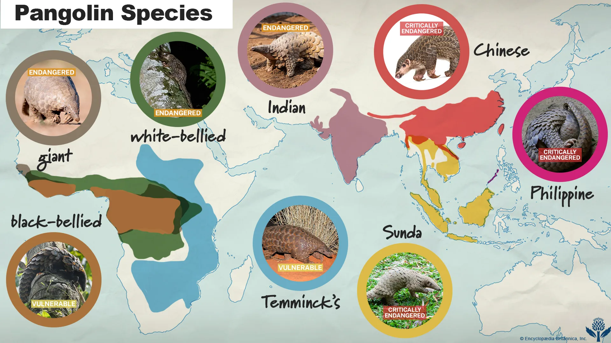

Where Pangolins Live
Pangolins occupy two broad regions of the world: tropical and subtropical Asia, and sub-Saharan Africa. The four Asian species and four African species have evolved to fill a diverse range of environments — from dense rainforest canopy to open savanna grasslands — yet all share the same basic requirements: a warm climate, abundant insect colonies, and cover for shelter and denning.
Because pangolins are secretive and nocturnal, their exact distributions are difficult to map precisely. Population surveys are challenging, and many range estimates are based on historical records, camera trap data, and reports from local communities rather than direct observation.

Asia
Asian pangolins inhabit a broad arc stretching from Nepal and India in the west through China, Southeast Asia, and into the Indonesian archipelago and the Philippines. The four species occupy different ecological niches within this range:
- The Sunda pangolin is strongly arboreal, spending much of its time in the trees of lowland tropical forests in Malaysia, Sumatra, Borneo, and Java.
- The Chinese pangolin prefers hilly terrain and is found at elevations up to 1,700 m, using its powerful forelegs to dig burrows in forest and grassland margins.
- The Indian pangolin tolerates a wider range of habitats, from tropical forests to degraded agricultural land across the Indian subcontinent and Sri Lanka.
- The Philippine pangolin is restricted entirely to the Palawan island group, where it lives in lowland and montane forests.
Habitat loss due to agricultural expansion, palm oil plantations, and urban development has severely fragmented pangolin populations across Asia.
Africa
African pangolins are found across a wide band of sub-Saharan Africa, from West Africa through the Congo Basin and into eastern and southern regions. The four species are divided between forest-dwelling and ground-dwelling lifestyles:
- The white-bellied pangolin lives in tropical rainforests from Senegal to Uganda, rarely descending from the trees.
- The black-bellied (long-tailed) pangolin occupies a similar forest range but is the only pangolin species typically active during the day.
- The ground pangolin (Temminck's) ranges widely across eastern and southern Africa, preferring open woodland, savanna, and scrubland.
- The giant ground pangolin is the largest species and inhabits moist central and west African forests, staying close to water sources.
African pangolins face mounting pressure from bushmeat hunting and the conversion of forest to farmland, particularly in the Congo Basin.
Habitat Types
While pangolins span a variety of ecosystems, all species require habitats that support large, stable colonies of ants and termites — their sole food source. Key habitat features include:
- Dense vegetation or tree cover — for shelter, nesting, and protection from predators
- Loose or sandy soil — ground-dwelling species need substrate suitable for digging burrows up to 3.5 m deep
- Low human disturbance — pangolins are highly sensitive to noise, light, and human presence
- Access to water — particularly important for the giant ground pangolin
Fragmentation of these habitats isolates populations, reduces genetic diversity, and makes pangolins more vulnerable to poachers who can more easily access smaller, isolated forest patches.
Sources: Wikipedia — Pangolin | IUCN Red List — Manidae | Save Pangolins